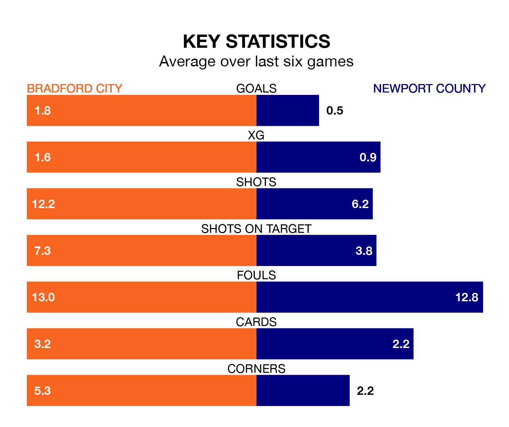

Bradford City are heavy favourites to keep all three points at home in Saturday's kick-off against Newport County.
The Bantams, who sit ninth in EFL League Two with 45 games played, are priced at 1.4 to seal victory at the University of Bradford Stadium.
Sitting eight places and 11 points behind them in the table, Newport are 7.0 to win with *Betting Company*, while the draw is at 4.6.
Bradford are in fantastic form in EFL League Two, with five wins and a draw from their last six games.
With no wins and six losses over that period, Newport's form is much worse – they have taken no points from 18, compared to City's 16.
In the last 10 years, Bradford and Newport have played each other on nine occasions. They won three each, and they drew three times.
On average, the Bantams scored 1.1 goals and the Exiles 1.0 in those matches.
Their last meeting was on September 23, when Bradford won 4-1 away.
In Will Evans, County have one of the league's sharpest shooters so far this season. He has notched 21 goals in 45 appearances, to sit fifth in the scoring charts.
His goal rate of one every 178 minutes is quicker than that of Andy Cook, the Bantams' top scorer with a goal every 210 minutes, and a total of 16 goals in 40 games.
With 57 goals in 45 games so far this season, the home team are scoring at below the league average rate with 1.3 goals per game. But they are conceding fewer than average too, letting in 58 goals at a rate of 1.3 per game.
The Exiles are also below average scorers, with 1.4 goals per game, compared to a league average of 1.5. They have conceded 1.6 goals per game.
Bradford's last match was on Tuesday, a 2-1 win against Barrow, with Bobby Pointon and Tyler Smith getting the goals for the Bantams.
Newport lost 1-0 against Salford City last time out, on April 20.
Updated: 07:59 (UTC), 26/04/24